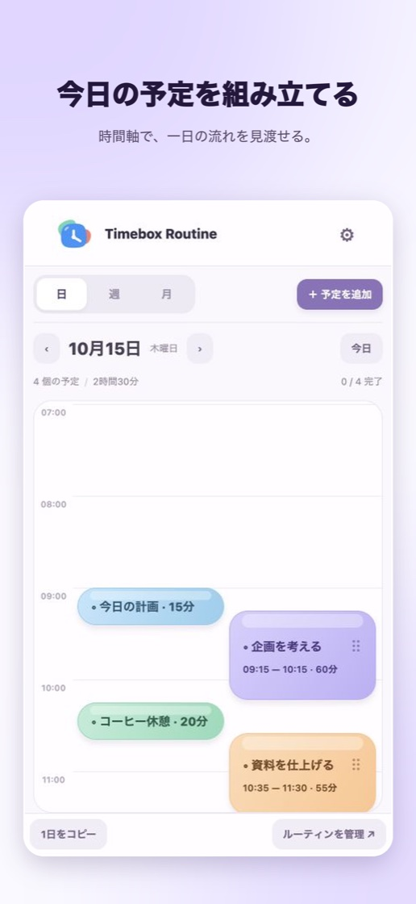
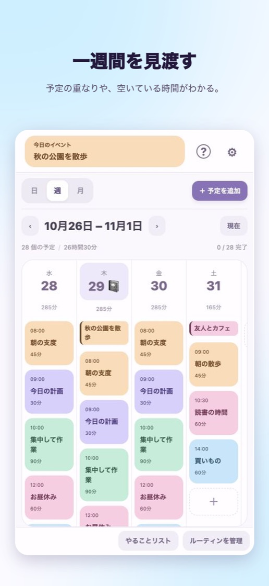
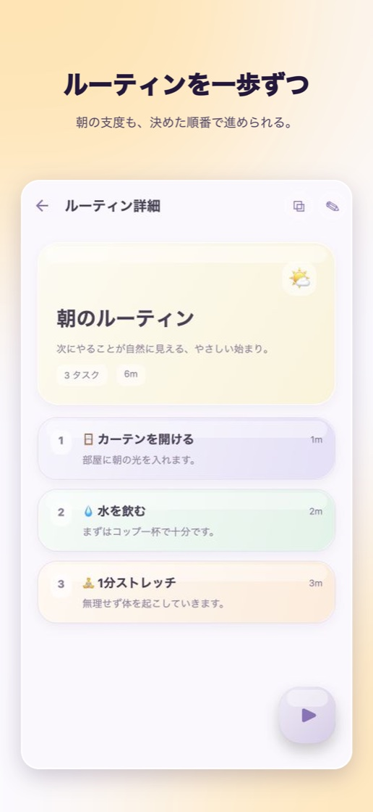

日・週・月の予定表
今日の時間配分をタイムラインで確認。週表示や月表示に切り替えて、先の予定も見渡せます。
Timebox Routine
仕事や勉強、家事や朝の支度をひとつの予定表に。やることを時間のブロックで並べて、毎日のルーティンをタイマーでひとつずつ進められます。
Features
開始時刻と所要時間がひと目でわかるので、仕事や勉強の合間に、移動や休憩の時間も組み込めます。
今日の時間配分をタイムラインで確認。週表示や月表示に切り替えて、先の予定も見渡せます。
予定カードを長押しして、移動したい時間までドラッグ。似た予定は別の日にコピーできます。
朝の支度などを複数のステップに分け、残り時間を見ながら進められます。一時停止やスキップにも対応します。
覚えておきたいことやその日の振り返りを、予定と同じアプリに残せます。
How to use
予定の名前と開始時刻、所要時間を設定します。
たとえば朝の支度なら、洗顔、着替え、朝食の順にステップを作り、それぞれの時間を決めます。
タイマーで今のステップと残り時間を確認します。予定がずれたら、カードをドラッグして調整できます。
Screens
iPhone版の画面で、予定表とルーティンを紹介します。



Release info
iPhoneとAndroidで配信中です。買い切りで、広告や月額料金はありません。